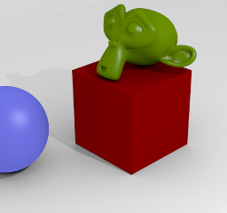

Cameras¶
A Camera is an object that provides a means of rendering images from Blender. It defines which portion of a scene is visible in the rendered image. By default a scene contains one camera. However, a scene can contain more than one camera, but only one of them will be used at a time. So you will only need to add a new camera if you are making cuts between them. See Animating Cameras.
参考
- Mode
Object Mode
- Editor
Cameras are invisible in renders, so they do not have any material or texture settings. However, they do have Object and Editing setting panels available which are displayed when a camera is the selected (active!) object.
镜头¶
参考
- 面板
The camera lens options control the way 3D objects are represented in a 2D image.
类型¶
透视模式¶
This matches how you view things in the real world. Objects in the distance will appear smaller than objects in the foreground, and parallel lines (such as the rails on a railroad) will appear to converge as they get farther away.

Render of a train track scene with a Perspective camera.¶
- Focal Length/Field of View
The focal length controls the amount of zoom, i.e. the amount of the scene which is visible all at once. Longer focal lengths result in a smaller FOV (more zoom), while short focal lengths allow you to see more of the scene at once (larger FOV, less zoom).
- Lens Unit
The focal length can be set either in terms of millimeters or the actual Field of View as an angle.

Render of the same scene as above, but with a focal length of 210mm instead of 35mm.¶
{kind=link}
Hint
Dolly Zoom
While the camera is moving towards an object the Focal Length property can be decreased to produce a Dolly Zoom camera effect, or vice versa.
This video demos the Dolly Zoom camera effect.
正交模式¶
With Orthographic perspective objects always appear at their actual size, regardless of distance. This means that parallel lines appear parallel, and do not converge like they do with Perspective.

Render from the same camera angle as the previous examples, but with orthographic perspective.¶
- Orthographic Scale
This controls the apparent size of objects projected on the image.
Note that this is effectively the only setting which applies to orthographic perspective. Since parallel lines do not converge in orthographic mode (no vanishing points), the lens shift settings are equivalent to translating the camera in the 3D View.

全景模式¶
Cycles支持方形与鱼眼两种全景类型，需要注意到是，它们都无法在OpenGL渲染时正常显示，只会体现在渲染结果中。
方形¶
Render a panoramic view of the scenes from the camera location and use an equirectangular projection, always rendering the full 360° over the X axis and 180° over the Y axis.
这种投影方法与世界着色器所使用的环境纹理相容，因此可用来渲染环境贴图。若要查看默认映射，需将摄像机物体的旋转设置为(90, 0, -90)，也就是朝向X轴正向。这样便可以让摄像机朝向默认的环境纹理贴图的中央了。
- Minimum/Maximum Latitude/Longitude
Limits of the vertical and horizontal field of view angles.
鱼眼¶
鱼眼镜头属于典型的广角镜头，会产生强烈的扭曲，常用于制作全景图，例如圆顶投影或某些艺术效果等。Fisheye Equisolid（等立体角型鱼眼）镜头可与实现与真实摄像机的最佳匹配效果。它提供了镜头焦距和可视角度的设定，同时会考虑传感器的大小。
鱼眼镜头属于典型的广角镜头，会产生强烈的扭曲，常用于制作全景图，例如圆顶投影或某些艺术效果等。Fisheye Equisolid（等立体角型鱼眼）镜头可与实现与真实摄像机的最佳匹配效果。它提供了镜头焦距和可视角度的设定，同时会考虑传感器的大小。
The Fisheye Equidistant lens does not correspond to any real lens model; it will give a circular fisheye that does not take any sensor information into account but rather uses the whole sensor. This is a good lens for full-dome projections.
- 镜头
镜头的焦距值，单位是毫米。
- 可视角
镜头的可视角度值，设定为360或更高的角度值可拍摄到完整的环境。
Mirror Ball¶
Render is if taking a photo of a reflective mirror ball. This can be useful in rare cases to compare with a similar photo taken to capture an environment.
Shift¶
The Shift setting allows for the adjustment of vanishing points. Vanishing points refer to the positions to which parallel lines converge. In this example, the most obvious vanishing point is at the end of the railroad.
To see how this works, take the following examples:

Render of a train track scene with a horizontal lens shift of 0.330.¶

Render of a train track scene with a rotation of the camera object instead of a lens shift.¶
Notice how the horizontal lines remain perfectly horizontal when using the lens shift, but do get skewed when rotating the camera object.
Using lens shift is equivalent to rendering an image with a larger FOV and cropping it off-center.
截断区间¶
- 截断起始点和截断结束点
The interval in which objects are directly visible, Any objects outside this range still influence the image indirectly, as further light bounces are not clipped.
For OpenGL display, setting clipping distances to limited values is important to ensure sufficient rasterization precision. Ray tracing renders do not suffer from this issue so much, and as such more extreme values can safely be set.
When Limits in the Display panel is enabled, the clip bounds will be visible as two yellow connected dots on the camera line of sight.
See also
摄像机¶

Camera Presets panel.¶
- Camera Presets
Presets to match real cameras.
- Sensor size
This setting is an alternative way to control the focal length, it is useful to match the camera in Blender to a physical camera & lens combination, e.g. for motion tracking.
- Sensor Fit
Option to control which dimension (vertical or horizontal) along which field of view angle fits.
景深¶
参考
- 面板

Real-world cameras transmit light through a lens that bends and focuses it onto the sensor. Because of this, objects that are a certain distance away are in focus, but objects in front and behind that are blurred.
The area in focus is called the focal point and can be set using either an exact value, or by using the distance between the camera and a chosen object:
Aperature¶
- Focus Object
Choose an object which will determine the focal point. Linking an object will deactivate the distance parameter. Typically this is used to give precise control over the position of the focal point, and also allows it to be animated or constrained to another object.
- Distance
Sets the distance to the focal point when no Focus Object is specified. If Limits are enabled, a yellow cross is shown on the camera line of sight at this distance.
Hint
Hover the mouse over the Distance property and press E to use a special Depth Picker. Then click on a point in the 3D View to sample the distance from that point to the camera.
Viewport¶
- High Quality
Enables the High Quality viewport depth of field, giving a more accurate representation of depth of field. This allows the viewport depth of field to be closely represented to that of the render and render preview depth of field.
- F-Stop
Viewport depth of field aperture measured in F-Stops. Smaller numbers will cause more blur in the viewport, OpenGL renders, and Sequencer.
- Blades
The number of polygonal sides to give blurred objects in the viewport. The minimum number of blades needed to enable the bokeh effect is 3 (triangle). (Only available with High Quality).
Aperture¶
- Aperture type
Use F-Stop or Radius to set the aperture for the render, and render preview. F-Stop is the focal ratio, where Radius is the radius of the focal point.
- Size/Number
Aperture radius size, or F-Stop number used for the render, and render preview. Using the F-Stop with a low number, or Radius with a large size will result in a strong blur, also allowing the use of the bokeh effect.
- Blades
Total number of polygonal blades used to alter the shape of the blurred objects in the render, and render preview. As with the viewport, the minimum amount of blades to enable the bokeh effect is 3, resulting in a triangular-shaped blur.
- Rotation
Rotate the polygonal blades along the facing axis, and will rotate in a clockwise, and counter-clockwise fashion.
- Ratio
Change the amount of distortion to simulate the anamorphic bokeh effect. A setting of 1.0 shows no distortion, where a number below 1.0 will cause a horizontal distortion, and a higher number will cause a vertical distortion.
Viewport Display¶
Camera Display panel.¶
- Limits
Shows a line which indicates Start and End Clipping values.
- Mist
Toggles viewing of the mist limits on and off. The limits are shown as two connected white dots on the camera line of sight. The mist limits and other options are set in the World panel, in the Mist section.

Camera view displaying safe areas, sensor and name.¶
- Sensor
Displays a dotted frame in camera view.
- Name
Toggle name display on and off in camera view.
- Size
Size of the camera visualization in the 3D View. This setting has no effect on the render output of a camera. The camera visualization can also be scaled using the standard Scale S transform key.
- Passepartout
This option darkens the area outside of the camera's field of view.
- Alpha
Controls the transparency of the passepartout mask.
Composition Guides¶
Composition Guides are available from the menu, which can help when framing a shot. There are eight types of guides available:
- Center
Adds lines dividing the frame in half vertically and horizontally.
- Center Diagonal
Adds lines connecting opposite corners.
- Thirds
Adds lines dividing the frame in thirds vertically and horizontally.
- Golden
Divides the width and height into Golden proportions (about 0.618 of the size from all sides of the frame).
- Golden Triangle A
Draws a diagonal line from the lower left to upper right corners, then adds perpendicular lines that pass through the top left and bottom right corners.
- Golden Triangle B
Same as A, but with the opposite corners.
- Harmonious Triangle A
Draws a diagonal line from the lower left to upper right corners, then lines from the top left and bottom right corners to 0.618 the lengths of the opposite side.
- Harmonious Triangle B
Same as A, but with the opposite corners.
Safe Areas¶
Safe areas are guides used to position elements to ensure that the most important parts of the content can be seen across all screens.
Different screens have varying amounts of overscan (especially older TV sets). That means that not all content will be visible to all viewers, since parts of the image surrounding the edges are not shown. To work around this problem TV producers defined two areas where content is guaranteed to be shown: action safe and title safe.
Modern LCD/plasma screens with purely digital signals have no overscan, yet safe areas are still considered best practice and may be legally required for broadcast.
In Blender, safe areas can be set from the Camera and Sequencer views.

The Safe areas panel found in the camera properties, and the view mode of the Sequencer.¶
The Safe Areas can be customized by their outer margin, which is a percentage scale of the area between the center and the render size. Values are shared between the Video Sequence editor and camera view.
Main Safe Areas¶

Red line: Action safe. Green line: Title safe.¶
- Title Safe
Also known as Graphics Safe. Place all important information (graphics or text) inside this area to ensure it can be seen by the majority of viewers.
- Action Safe
Make sure any significant action or characters in the shot are inside this area. This zone also doubles as a sort of "margin" for the screen which can be used to keep elements from piling up against the edges.
Tip
Legal Standards
Each country sets a legal standard for broadcasting. These include, among other things, specific values for safe areas. Blender defaults for safe areas follow the EBU (European Union) standard. Make sure you are using the correct values when working for broadcast to avoid any trouble.
Center-Cuts¶
Cyan line: action center safe. Blue line: title center safe.¶
Center-cuts are a second set of safe areas to ensure content
is seen correctly on screens with a different aspect ratio.
Old TV sets receiving 16:9 or 21:9 video will cut off the sides.
Position content inside the center-cut areas to make sure the most important elements
of your composition can still be visible in these screens.
Blender defaults show a 4:3 (square) ratio inside 16:9 (wide-screen).
Camera Operations¶
Warning
todo 2.8: move this to somewhere better
Changing the Active Camera¶
参考
- Mode
Object Mode
- Hotkey
Ctrl-Numpad0

Active camera (left one).¶
The active camera is the camera that is currently being used for rendering and camera view Numpad0.
Select the camera you would like to make active and press Ctrl-Numpad0 (by doing so, you also switch the view to camera view). In order to render, each scene must have an active camera.
The active camera can also be set in the Scene tab of the Properties Editor.
The camera with the solid triangle on top is the active camera. Limit and mist indicators of cameras are drawn darker if the camera is not the active camera for the current scene.
Note
The active camera, as well as the layers, can be specific to a given view, or global (locked) to the whole scene. See Local Camera.
Render Border¶
参考
- Mode
All modes
- Menu
- Hotkey
Ctrl-B

Render Border toggle.¶
While in camera view, you can define a subregion to render by drawing out a rectangle within the camera's frame. Your renders will now be limited to the part of scene visible within the render border. This can be very useful for reducing render times for quick previews on an area of interest.
The border can be disabled by disabling the Border option in the Dimensions panel in the Render tab or by activating the option again.

|

|